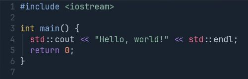

About
C++ is a high level, general-purpose programming language created by Bjarne Stroustrup. First released in 1985, it was an extension of the C programming language, adding object oriented programming features.
C++ was designed with systems programming and embedded software in mind. Some of its design highlights include its performance, efficiency, and flexibility of use. C++ has also been proven to be useful in other contexts like software infrastructure and resource constrained applications, desktop applications, video games, servers, web browser engines, and performance-critical applications.
C++ is standerdized by the International Organization for Standardization (ISO). The latest version published in October 2024 as C++23. The language was first standardized in 1998 (C++98) which was later followed by C++03, C++11, C++14, C++17, and C++20 standards. Since 2012, C++ has a release every three years. C++26 is the next planned standard.
History
In 1979, Bjarne Stroustrup, Danish computer scientist, began working on the predecessor of C++ named "C With Classes". His motivation for creating a new langauge came from his experience in programming for his PhD thesis. A language named Simula had features that were very helpful for software development, but the language was too slow for practical use. Another language named BCPL was fast but too low-level to be suitable for software development. When Stroustrup started working at AT&T Bell Labs, he was tasked with analyzing the UNIX kernel with respect to distributed computing. Stroustrup set out to enhance the C language.
C With Classes added features to the C compiler like classes, derived classes, inlining, and default arguments. In 1982, Stroustrup started to develop a successor to C With Classes named C++ with even more features added.
In 1985, the first edition of The C++ Programming Language was released, which is a book that became the definitive reference for the language. The first commercial verision of the language was released in October of that year.
In 1989, C++ 2.0 was released, followed by the second edition of The C++ Programming Language. In 1990, The Annotated C++ Reference Manual was published, which later became the basis for the future standard.
In 1998, C++98 released, standardizing the language. A minor update, C++03, was released in 2003.
In 2011, C++11 released, which added numerous new features. A minor update released in December 2014 (C++14). Various new additions were introduced in C++17 in 2017.
On December 15, 2020, the C++20 standard was released. This was a significant release since it introduced new features that impacted the language and standard library. Modules were introduced for code organization and reuse, aiming to reduce reliance on header files, improving build times, and enhancing code safety.
In February 2023, C++23 released which aimed to further modernize the language, improve safety, and enhance productivity for developers.
As of now, C++26 is currently in development. The most widely used C++ standard is C++17 with C++20 experiencing rapid adoption. C++23's adoption is in its early stages in many codebases while its compilers and tools catch up.
Standard Library
The C++ standard contains two main components. The core language and the standard library. The standard library contains aggregate types like vectors, lists, maps, sets, queues, stacks, arrays, and tuples. There are algorithms like find, for_each, binary_search, random_shuffle, etc. There are also input/output facilities like iostream for reading and writing to the console and files.
The C++ standard library is designed to be minimalistic, containing only core features for programming. It lacks more specialized features that are offered in other langugaes like Java, C#, or Python.
Philosophy
Throughout C++'s life, its development has been guided by a set of principles:
- It must be driven by actual problems and its features should be immediately useful in real world programs.
- Every feature should be implementable (with a reasonably obvious way to do so).
- Programmers should be free to pick their own programming style, and that style should be fully supported by C++.
- Allowing a useful feature is more important than preventing every possible misuse of C++.
- It should provide facilities for organizing programs into separate, well-defined parts, and provide facilities for combining separately developed parts.
- No implicit violations of the type system (but allow explicit violations; that is, those explicitly requested by the programmer).
- User-created types need to have the same support and performance as built-in types.
- Unused features should not negatively impact created executables (e.g. in lower performance).
- There should be no language beneath C++ (except assembly language)
- C++ should work alongside other existing prgramming languages, rather than fostering its own separate incompatible prgramming environment.
- If the programmer's intent is unknown, allow the programmer to specify it by forcing manual control.
Stroustrup also has a famous quote that goes "C makes it easy to shoot yourself in the foot; C++ makes it harder, but when you do it blows your whole leg off."
Sample Code
Here is come C++ sample code of the classic hello world program.
